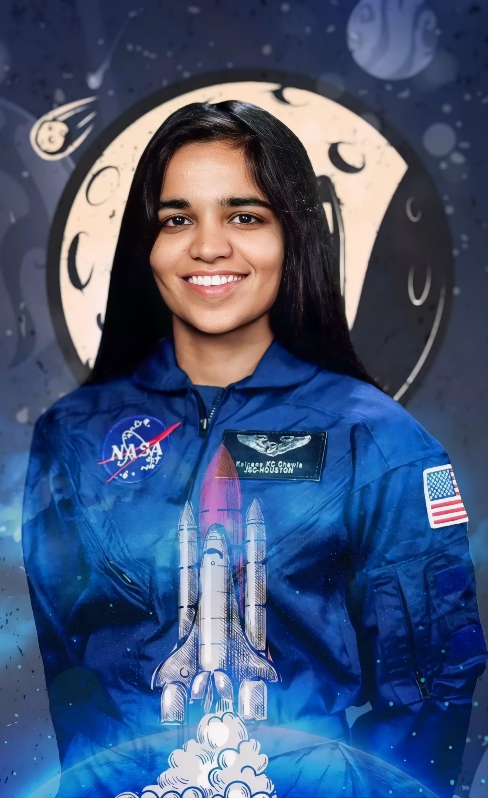

Kalpana Chawla
"Believe in the power of your dreams and have the courage to pursue them"
A brief time line of Kalpana Chawala's life :
Early Life and Education :
- March 17, 1962: Kalpana Chawla is born in Karnal, Haryana,
India.
- 1976: Graduates from Tagore School, Karnal.
- 1982: Receives a Bachelor of Engineering degree in Aeronautical
Engineering from Punjab Engineering College, Chandigarh.
Higher Education and Early Career :
- 1984: Earns a Master of Science degree in Aerospace Engineering
from the University of Texas at Arlington
- 1988: Completes a Ph.D. in Aerospace Engineering from the
University of Colorado Boulder.
NASA Career:
- 1988: Joins NASA Ames Research Center.
- 1993: Joins the NASA Astronaut Corps.
- 1995: Selected for her first space mission.
Space Missions :
- November 19, 1997: Launches on her first mission, STS-87 aboard
Space Shuttle Columbia, becoming the first
woman of Indian origin in space.
- December 5, 1997: STS-87 mission concludes successfully.
Second Space Mission and Tragic End :
- January 16, 2003: Embarks on her second mission, STS-107, aboard
Space Shuttle Columbia.
- February 1, 2003: The Columbia shuttle disintegrates upon
re-entry, leading to the tragic loss of all seven crew members,
including Kalpana Chawla.
Legacy :
- Posthumously awarded the Congressional Space Medal of Honor.
- Several educational institutions, scholarships, and awards have been named in her honor.
- An inspiration for many, particularly in India, for her achievements in space exploration and science.
More Information On :